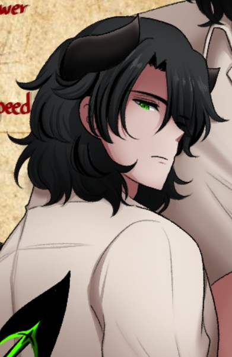
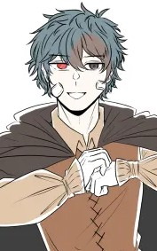
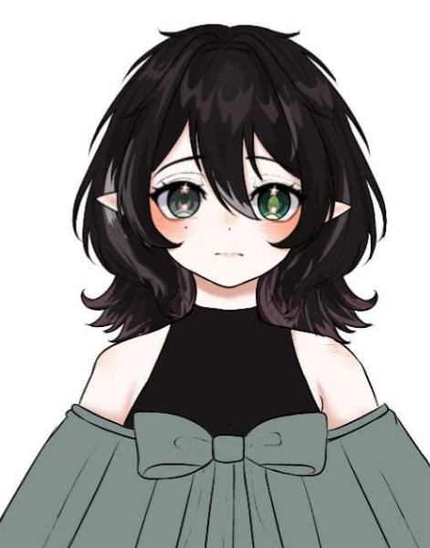
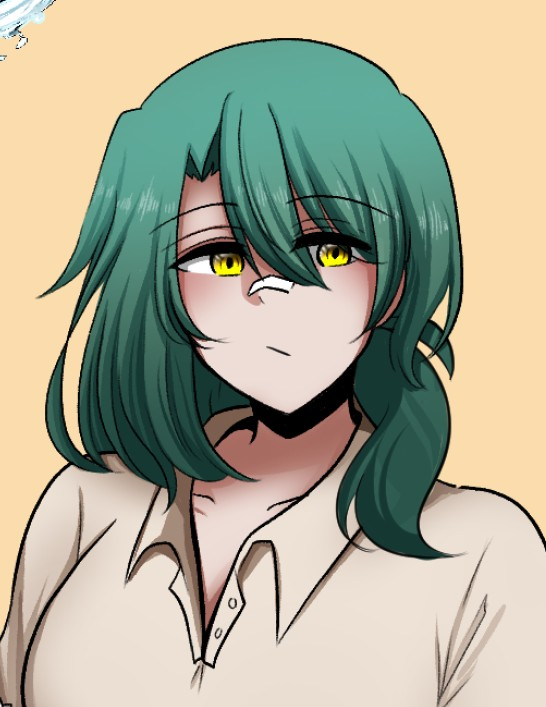
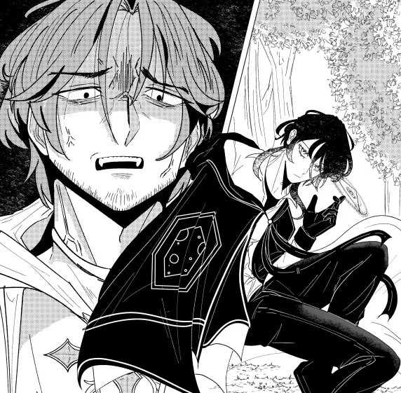
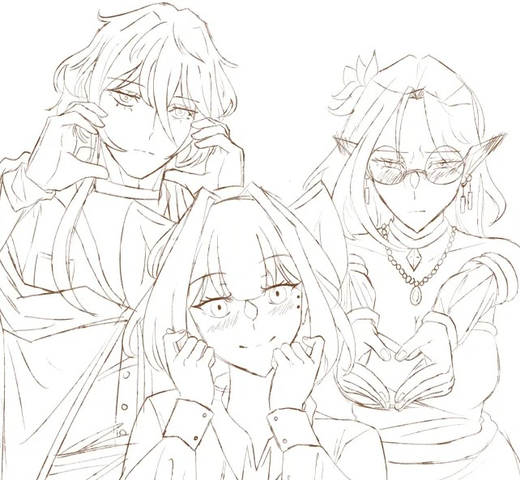
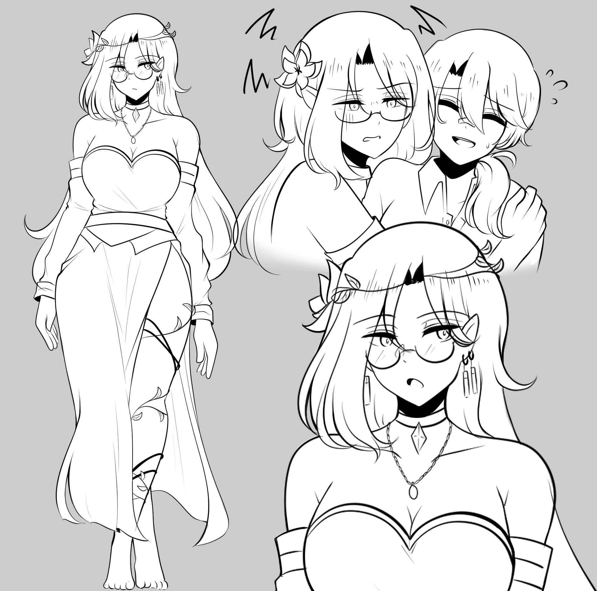
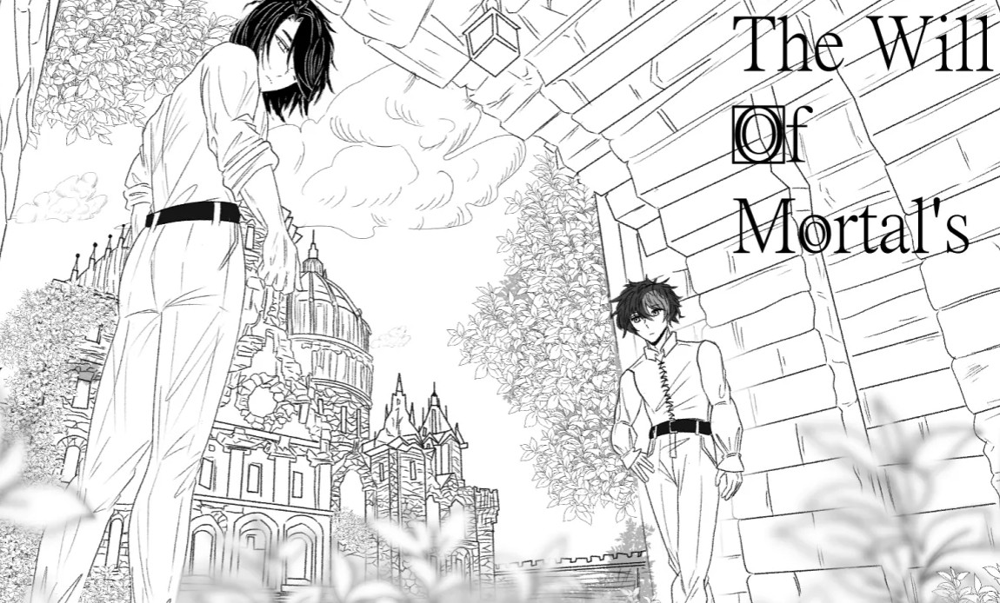
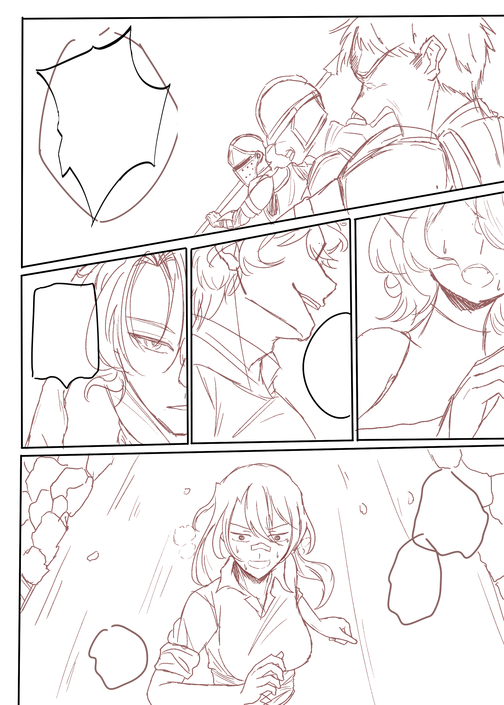

Bienvenido al reino de
Los origenes
Transcrito por los escribas del Concilio Gris
¿Alguna vez han oído hablar del "destino"? Me imagino que sí, a no ser que seas un bruto bárbaro que no sepa leer. Ese hilo que nos une con algún objetivo que los dioses prepararon para nosotros. Una porquería que nos dan desde nuestro nacimiento... pero ¿Qué pasaría si te dijera que hay una forma de cambiarlo o de eliminarlo?
En este mundo los dioses son los regentes de la humanidad, tiene templos, campeones, cultos, etc. ¿Nosotros? Sus ovejas que arrean en el ganado, se divierten mirándonos y jugando con nuestros objetivos, incluso son capaces de alterar la misma realidad con tal de hacer lo que les place. Si eres un Dios tienes la vida resuelta en tu inmortalidad, pero si eres mortal... bueno... no importas. Seas un imponente Dragón o un Goblin gordo no interesa mucho. Siempre seremos ovejas.
La gente ya lo acepto, los reinos solo hacen lo que se les place, creyendo que eso no forma parte de su destino.
A este paso, te estaras preguntando "¿Como es que conoces tu destino?", si eres lo suficiente curioso como muchos seres mortales. Puedes armarte de valor y cumplir tareas para los dioses y la toda poderosa Diosa Moirae te inducirá en un sueño donde veras tu vida pasar y como va a terminar. Como si de repente adquirieras el conocimiento de tu vida y cada paso es una obligación a seguir por el tiempo que estas vivo.
"¿Que pasa si lo desobedeces?" La respuesta es simple los Dioses se volverán en tu contra. Como si te ficharan el resto de tu vida como algo que hay que eliminar bajo todos los medios. No se permiten "ovejas negras" en sus rebaños... putos racistas.
"Volkarum" fueron llamados los seres que tienen el valor o suficiente estupidez para desafiar el destino impuesto por los inmortales. Se les otorga una marca profunda en la piel acompañada de un dolor remanente equivalente a tu fechoría sacrílega, como si un metal hirviendo la cosiera en tu piel a carne viva. Las marcas son irrevocables y aunque sigas tu destino otra vez, siempre seras un hereje.
Así funciona nuestro mundo. Asi es "Credentis".
No obstante, no todo es malo... es peor. La magia otorga estatus, por ende los que la poseen pueden ser muy elitistas. Los aventureros se creen la policía de los pueblos y si no eres fuerte no te respetan. Los mercenarios hacen lo que sea por un par de monedas por mas atroces que sean las acciones que les piden. Los asesinos no tienen corazón y si crees que te perdonaran, mejor desafía a Dios es más probable que le ganes. Los de distintas razas se discriminan entre si.
No los culpo, la mayoría ha sido por influencia de los mismos dioses. Este caos en un mundo tan hermoso y lleno de vida. Tu "destino" siempre será lo que mas importa.
"Entonces ¿No hay más que hacer?" La respuesta es no. Solo acepta tu "Destino" y jódete.
Aunque existe una leyenda...
Una muy antigua... que solo conocía cierta casta de "Demonios". La "Casa de Ascalon".
Demonios de sangre pura que desafiaban a los dioses, ya que sabían que si un mortal entraba en el reino de los dioses conocido como "Dominus" y traspasaban sus portones, se volvería un ser capaz de decidir su propio destino.
O eso dice la leyenda.
No obstante, no ha habido ser en el mundo que lo haya conseguido como para comprobarlo. Y tampoco se sabe dónde ésta el reino de los dioses. Los escritos fueron eliminados por los mismos dioses. Nadie desafía a un Dios, nadie sobrevive y nadie jamás cumplirá sus sueños.
Entonces ¿Qué harás, estúpido?
Nuestros Aventureros

Humano/Demonio
Pulsa para conocer su historia

Ladron
Pulsa para conocer su historia

Dragon/Vampiro
Pulsa para conocer su historia

Druida
Pulsa para conocer su historia
Momentos inmortalizados




